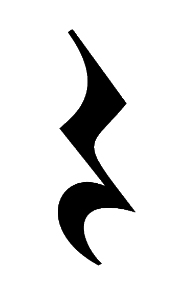
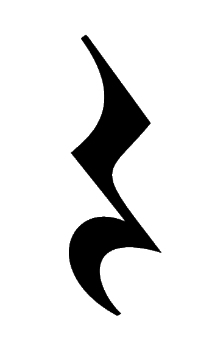

Chordajutor
Welcome!
Are you trying to just play along in your band or accompany someone, but now you have some problems with chords? You're in the right place then! Go to one of our subpages and let us help you, be it transposing chords, finding a chord or a scale.